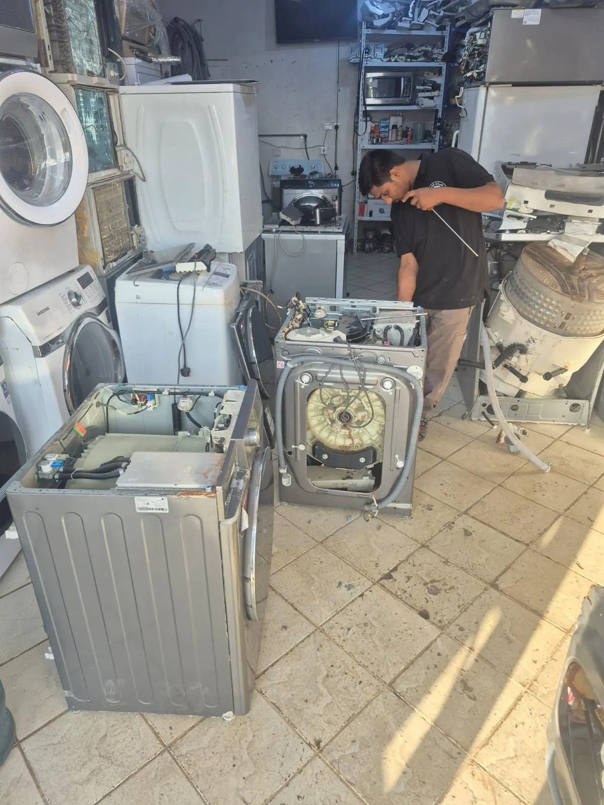
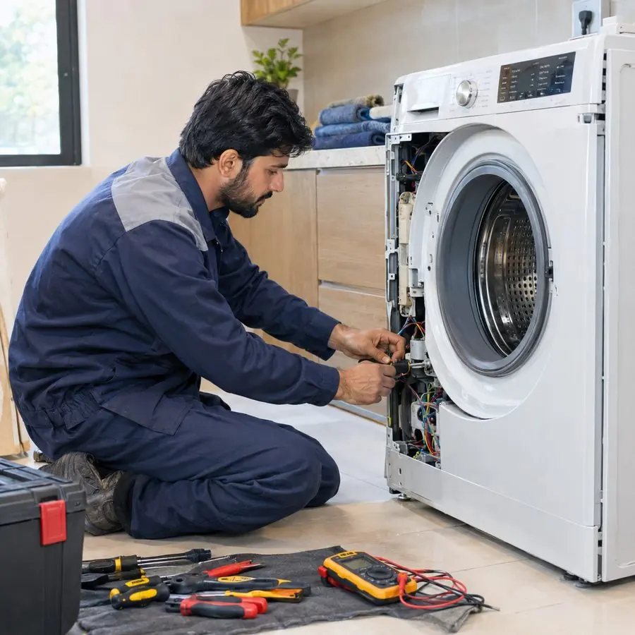
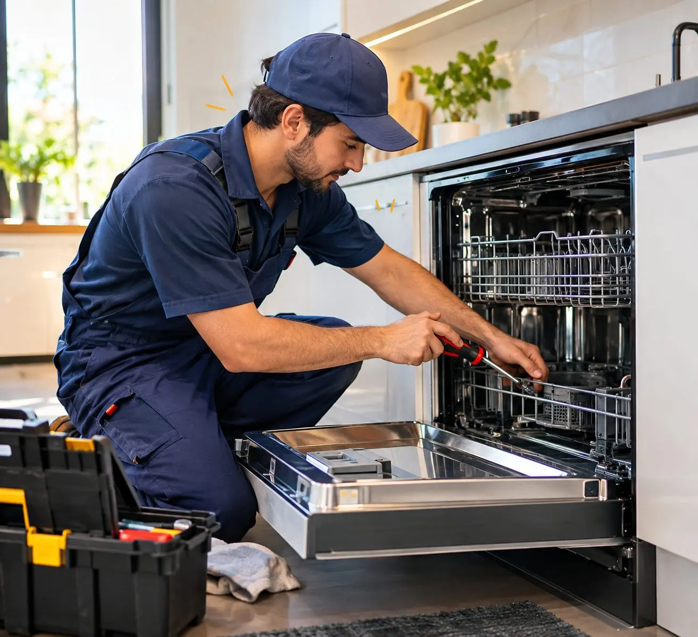
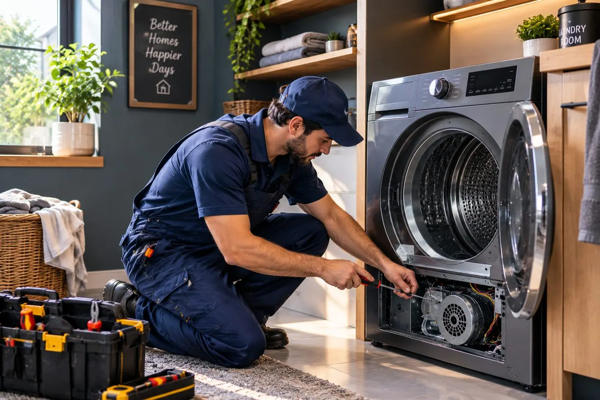

خدمات صيانة الغسالات الأوتوماتيك وغسالات الصحون والنشافات في الرياض
اختر الجهاز الذي يزعجك لترى الأعطال الشائعة، وما نفعله حيالها، وكيف تسير الزيارة.
نصلح ثلاثة أنواع من الأجهزة المنزلية في الرياض، وأولها الغسالات الأوتوماتيك ثم غسالات الصحون والنشافات، ومنها الغسالة المدمجة مع النشافة. لكل خدمة دليلها الخاص بالأعطال الشائعة ورموز الأعطال وخطوات الإصلاح: صيانة غسالات اتوماتيك وصيانة غسالة صحون وصيانة النشافات وصيانة غسالة مجفف. وإن لم تكن متأكداً أننا نصلح ماركتك فراجع صفحتي ماركات الغسالات وماركات غسالات الصحون.
خدماتنا في الصيانة

إصلاح معتمدإصلاح الغسالات الأوتوماتيك
إصلاح احترافي للغسالات الأوتوماتيك وأعطالها الشائعة.

إصلاح معتمدإصلاح غسالات الصحون
غسالة الصحون لا تنظّف جيداً، أو يبقى الماء في قاعها، أو تسرّب، أو لا تعمل لوحة التحكم. نبدأ بالفلتر والمضخة وأذرع الرش لأن أغلب المشاكل تبدأ من هناك.

إصلاح معتمدإصلاح النشافات
نشافة تدور دون أن تسخّن، أو تستغرق وقتاً طويلاً في التجفيف، أو توقف حوضها عن الدوران. أعطال النشافات غالباً بسيطة عندما يفتحها شخص يعرف ما يبحث عنه.
لست متأكداً أي خدمة تحتاج؟
اعتمد على ما تفعله الآلة. إن خرجت الملابس مبللة جداً أو لم يدر الحوض أو لم يصرّف الماء فابدأ بصيانة الغسالات الأوتوماتيك. وإن خرجت الأطباق غير نظيفة أو بقي الماء في الحوض فهذه صيانة غسالة الصحون. وإن اشتغلت النشافة وبقيت الملابس رطبة أو باردة فهذه صيانة النشافات. وإن كان عندك جهاز واحد يغسل ويجفف فصفحة الغسالة المجففة لك.
ومهما اخترت فالزيارة تسير بالطريقة نفسها: تخبرنا بالماركة والعطل، فيصلك فني إلى عنوانك في الرياض، ويحدد السبب الحقيقي ويشرح التكلفة قبل أي إصلاح، والإصلاح بضمان 30 يوماً على القطع والعمالة.
لا تزال غير متأكد؟ صف لنا ما تراه في صفحة التواصل أو راسلنا عبر واتساب وسنوجهك إلى الخدمة المناسبة.
كيف يجدنا العملاء وعمليات البحث ذات الصلة
عمليات بحث ذات صلة:
تحتاج إصلاح غسالة أو غسالة صحون أو نشافة في الرياض؟
اتصل بنا أو راسلنا على واتساب بالماركة والعطل وسنرتب لك زيارة.